Q12027
Our neighborhood. Our centennial.
A century together.
A century together.
A year to celebrate.
Sherman Oaks turns 100 in 2027. Join your neighbors for a year of art, community, history and celebration.
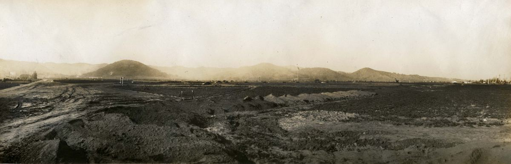
About Sherman Oaks 100
Made by neighbors, for neighbors.
A year to gather, tell our stories and imagine what comes next.
The centennial brings together residents, businesses, schools and community organizations. The plans center on four gatherings: a mural unveiling, a cleanup and tree planting, an August pop-up museum and student art event, and a Street Fair centennial celebration.
The 2027 celebration
Four seasons. Plenty to look forward to.
Four community events are planned for the centennial year. Save the dates for the pop-up museum (around August 18) and the Street Fair (Sunday, October 17). Other dates, venues, admission and accessibility details will be shared as plans are confirmed.
Looking ahead
Counting down to Founders’ Day.
The official Founders’ Day date will be announced here once confirmed.
- Days
- 0
- Hours
- 0
- Minutes
- 0
- Seconds
- 0
Our history
A hundred years of stories.
The places we remember and how they’ve changed. Pick a place, then drag the divider to compare.
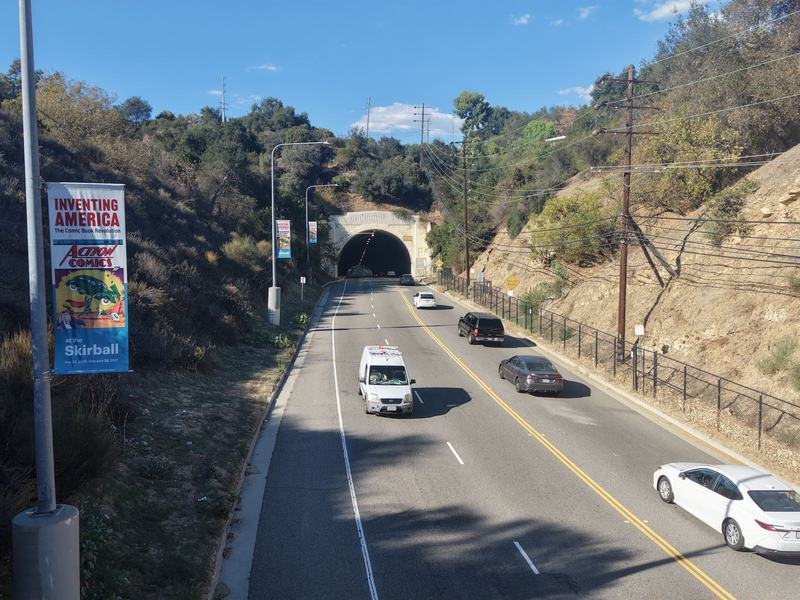
1930 2026Drag to compare 1930 and 2026.
Sepulveda Blvd. at Mulholland Dr.
Sepulveda Tunnel
Riders on horseback and early automobiles crowd the roadway at the tunnel in 1930. Nearly a century later, the same approach carries daily traffic through the Sepulveda Pass.
2026 photograph: Sherman Oaks 100.
1 of 5
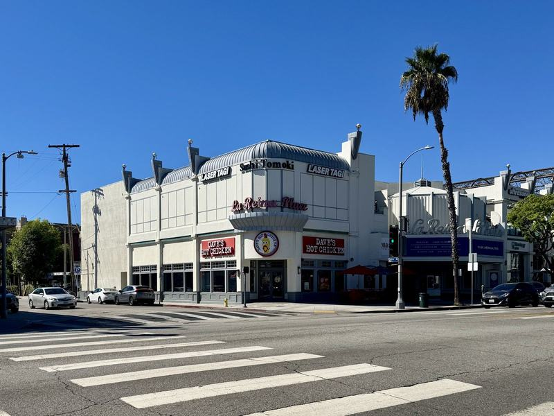
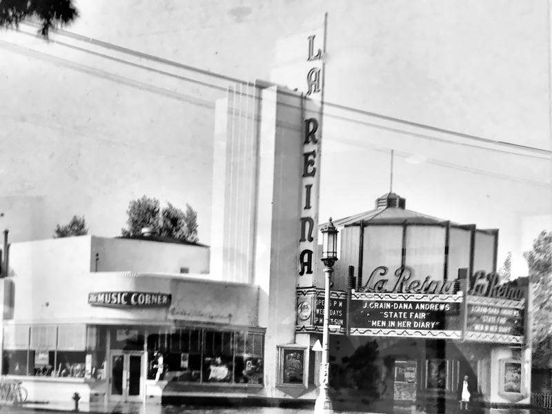
Drag to compare 1945 and 2026.
Ventura Blvd. at Cedros Ave.
La Reina Theatre
The La Reina opened on Ventura Boulevard in 1937; in this 1945 view its marquee advertises State Fair. The building still stands at the corner, where its former theatre front is now home to shops.
The 1945 view was digitally restored from two photographs of a framed print to reduce glare from the glass; its original credit is being confirmed. 2026 photograph: Sherman Oaks 100.
See it on the map → See the marquee up close →
2 of 5
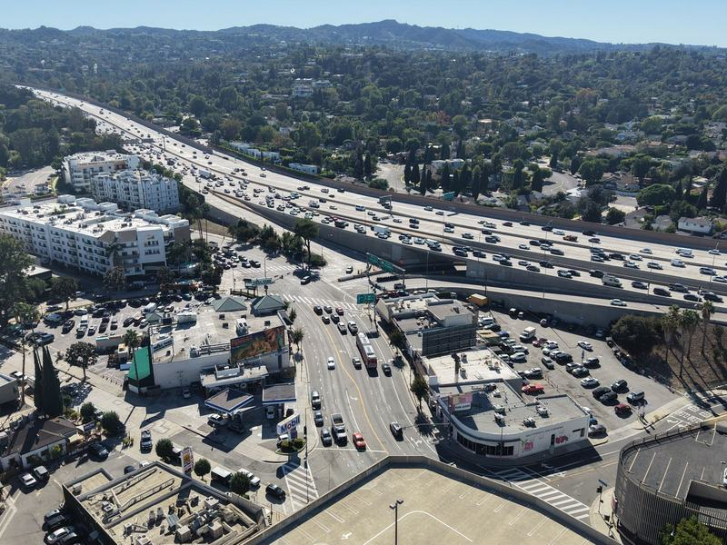
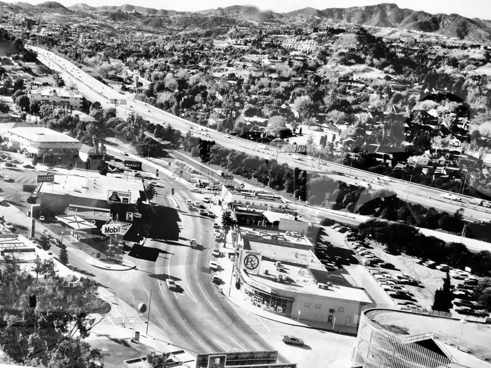
Drag to compare 1960s and 2026.
Ventura Blvd. at Sepulveda Blvd.
Ventura and Sepulveda
A Mobil station and a neighborhood market sit beside the new San Diego Freeway (405) as it climbs into the Sepulveda Pass. The freeway opened through the pass in December 1962.
The 1960s view was digitally restored from photographs of a framed print in the centennial archive; its original credit is being confirmed. 2026 photograph: Sherman Oaks 100.
3 of 5
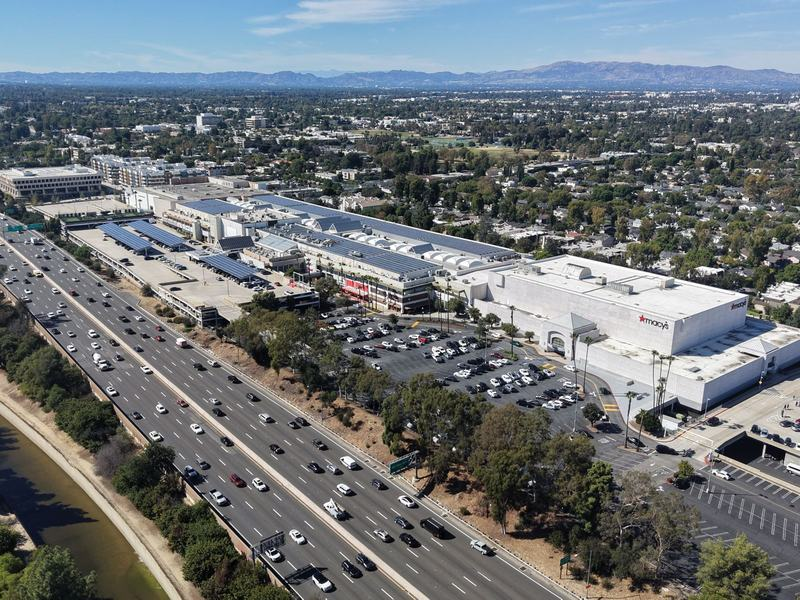
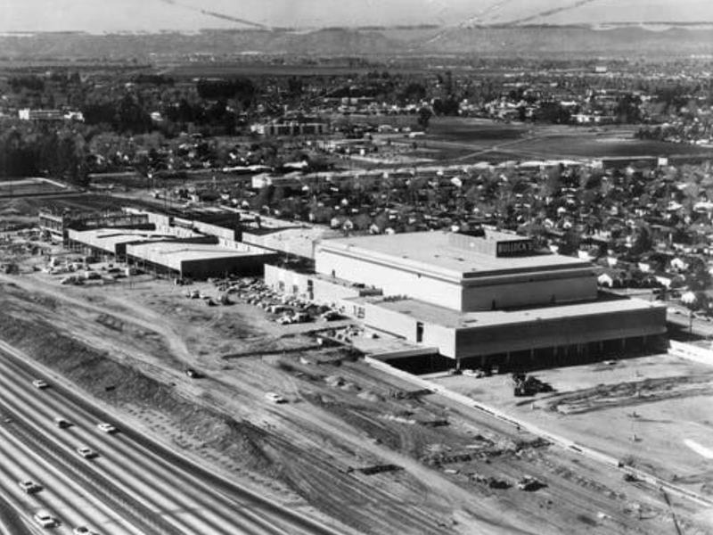
Drag to compare 1962 and 2026.
Riverside Dr. · looking northwest
Fashion Square and the Ventura Freeway
Bullock's rises beside the Ventura Freeway in this January 24, 1962 aerial, as Fashion Square takes shape on the former McKinley Home for Boys site. Van Nuys–Sherman Oaks Park lies beyond.
2026 photograph: Sherman Oaks 100.
See it on the map → See the McKinley Home in 1927 →
4 of 5
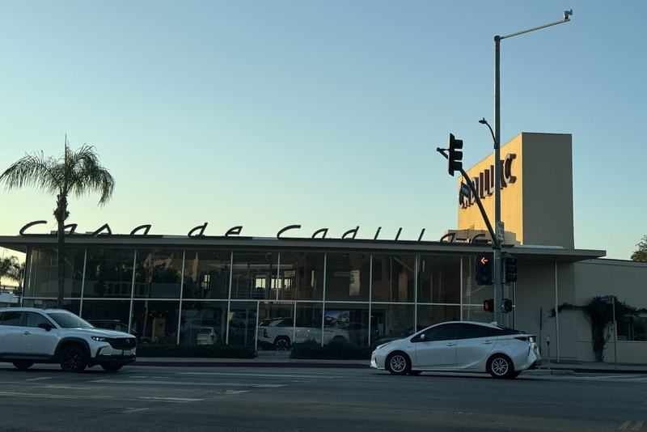
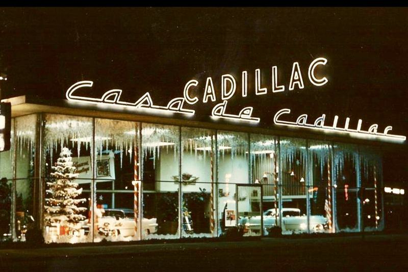
Drag to compare 1955 and 2025.
14401 Ventura Blvd.
Casa de Cadillac
Holiday lights fill the showroom windows at Christmas 1955. The dealership opened in 1949 as Don Lee Cadillac, took the Casa de Cadillac name in 1950 and still carries its script sign.
Photograph credits are being confirmed.
5 of 5
More views in the works
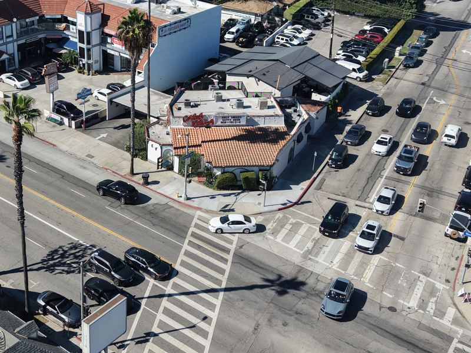
Historic photo pending
Casa Vega
Part of Ventura Boulevard since 1956. We’re working to clear a 1970 aerial of this corner to pair with this 2026 view.
See it on the map →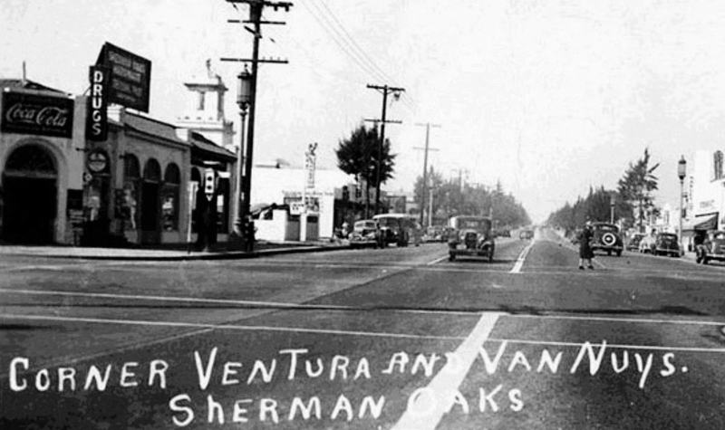
Matching photo planned
Ventura and Van Nuys, 1940
A present-day photograph from the same corner, facing the same direction, is planned. 1940 image courtesy of Getty Images.
See it on the map →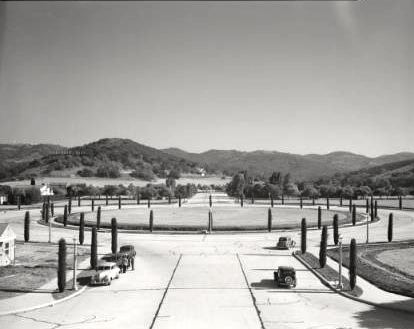
Location being confirmed
Sherman Oaks Circle, c. 1940
A 1929 plan imagined a “City Hall” here that was never built. Help us find where the camera stood.
Know this spot? Tell us →From the archive
Photographs from the centennial history collection. Select one to see it larger.

Sherman Oaks, March 15, 1928
Open land and the hills above the young community. The 2024 Sherman Oaks history presentation identifies a “Sherman Oaks” sign on the hillside.

Ventura and Van Nuys, 1940
The corner of Ventura and Van Nuys boulevards. Image courtesy of Getty Images, as credited on the 2017 90th-anniversary postcard.

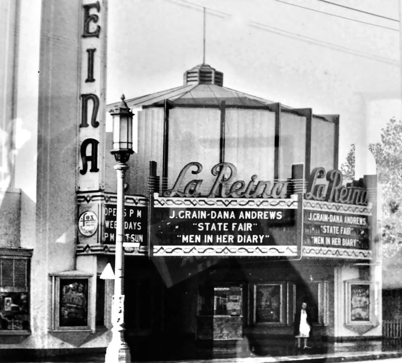
La Reina Theatre marquee, 1945
The marquee advertises State Fair and Men in Her Diary, both released in 1945. Digitally restored to reduce glare from the glass of the framed print.

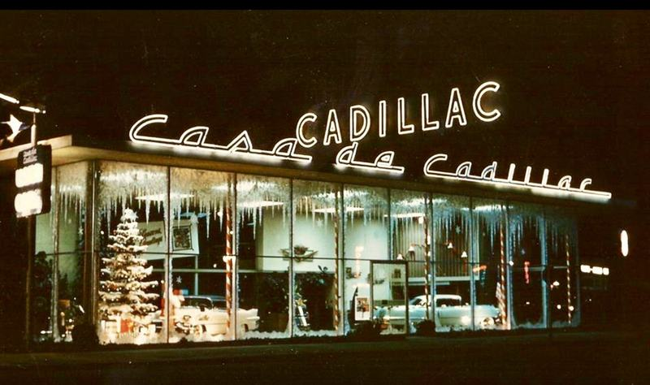
Casa de Cadillac, Christmas 1955
The showroom opened in 1949 as Don Lee Cadillac and became Casa de Cadillac in 1950.

Sherman Oaks Circle, around 1940
The circle, its new roads and the open hills in one view. A 1929 proposal for a “City Hall” here was never built.

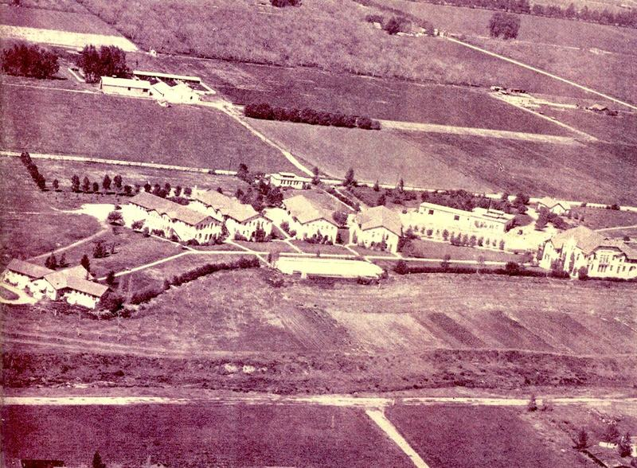
McKinley Home for Boys, 1927
An aerial view of the McKinley Home for Boys campus. Fashion Square opened on the former McKinley Home site in 1962.

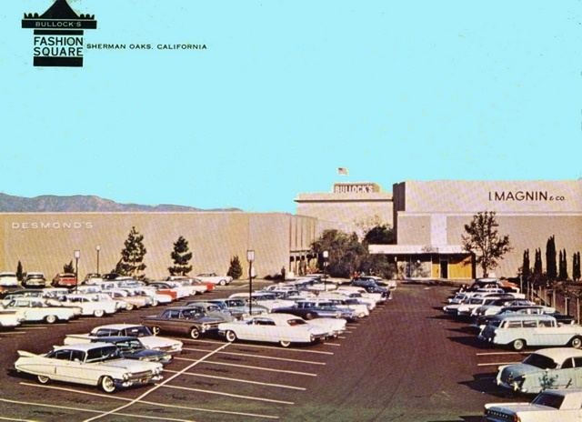
Bullock’s Fashion Square
A vintage postcard of the shopping center, with Bullock’s, I. Magnin and Desmond’s. Fashion Square opened in 1962.
Dates and descriptions come from the centennial history archive and the 2024 Sherman Oaks history presentation. Photographer and collection credits are being confirmed and will be added beside each image. If you hold rights to one of these photographs, please contact us.
Around the neighborhood
A neighborhood of discoveries.
Visit the corners in our then-and-now photographs. Tap a pin to see the place then and now.
Loading the map…
Places to explore
Places will appear here.
Loading places…
Then-and-now photo spots will appear here in a moment.
Drag or use two fingers to move the map. Use + / − to zoom, or focus the map and use the arrow keys. Every place is also listed beside the map.
Report a street-map issue (opens in a new tab)Every place has a story.
Suggest a public place for the centennial map. Share its name, location and what makes it part of Sherman Oaks.
Community stories
The Sherman Oaks Memory Wall.
A place for the community’s memories, told by the people who lived them.
Every neighbor has a story.
A favorite storefront. A school-day memory. A family photo with a story behind it. We’d love to hear yours.
Stories, photographs and videos will appear here after contributor permission and committee review.
Share a memory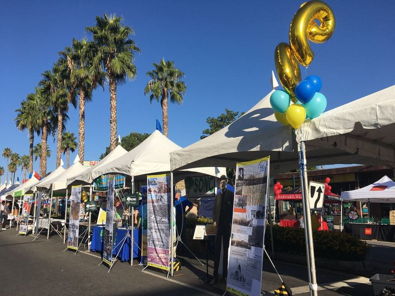
Support the centennial
Help bring the year to life.
The following amounts are proposed. Benefits, recognition and the official sponsorship program link are awaiting confirmation.
$100
Benefits to be confirmed.
Ask about this level →$1,000
Benefits to be confirmed.
Ask about this level →$5,000
Benefits to be confirmed.
Ask about this level →$10,000+
Benefits to be confirmed.
Ask about this level →Let’s talk about your support.
Tell us your name, organization and the level you’re interested in. You can also ask about contributing goods, services or a venue. Payment instructions and any applicable tax information will come from the committee’s approved program.
Centennial Legacy
Celebrate today. Invest in tomorrow.
The committee’s long-term vision includes projects that could continue beyond 2027.
More trees, lasting shade
Explore opportunities for tree planting and long-term care.
Small-business support
Consider grants that could help neighborhood businesses grow.
Student scholarships
Explore ways to support local students and their future.
These are ideas under consideration. Program details, funding and the organization responsible for managing them are still to be confirmed.
Be part of it
A little time. A story. A big difference.
Choose how you’d like to take part. Each option opens an email to the committee, and nothing is sent automatically.
Volunteer
Tell us the kind of work you enjoy and your availability. Event support, art, outreach and planning are all good starting points. You can also join a working committee.
Email us to volunteerTell your story
Send a short description of your memory, about when it happened, and how you’d like us to contact you. We’ll follow up before anything is published.
Email a story ideaContribute photographs
Tell us what your photograph shows, its approximate date and who took it, if you know. We’ll help with sharing a copy and confirming permission.
Email about your photographsBring your organization into the celebration.
Businesses & civic groups
Discuss sponsorship, services, volunteer support or a place to gather.
Schools & students
Connect with the committee about student art and opportunities to take part.
Neighborhood organizations
Bring your ideas, members and local knowledge into the planning.
Participating organizations will be listed once their involvement is confirmed.
Steering committee
The people behind the year.
The Centennial Steering Committee is planning the celebration, with members from across Sherman Oaks.
Co-chairs
- Fran KerznerSherman Oaks/Encino Chamber Board Member
- Vickie Bourdas MartinezCEO, Sherman Oaks/Encino Chamber
Committee
- Cesar CardonaSherman Oaks/Encino Chamber Member
- Emily AaronsonSherman Oaks Library
- Frank RojasSherman Oaks/Encino Chamber Board Chair
- Howard KatchenSherman Oaks Neighborhood Council
- Kelly LynchSherman Oaks Homeowners Association
- Leslie ElkanSherman Oaks Business Improvement District
- Row ZadehSherman Oaks Business Improvement District
- Tammy ScherSherman Oaks/Encino Chamber Board Member
- Tom BouletSherman Oaks Community Member
Special thanks
- Adam Khalid / Rock Solid DesignCentennial logo
- Alex Amadeo-RanchWebsite development
Working committees
Join a working committee.
Interested in joining one of the centennial’s working committees? Email us with the subject “Centennial Committee” and tell us which one interests you.
Email to join a committee- Ambassador Team
- Children’s Art Contest
- Guest Relations
- Marketing and Publicity
- Median Decorations
- Pop-up Museum
- Service Day LA
- Sponsorship Cultivation
FAQ
A few common questions.
When is the centennial?
The celebration is planned for 2027. The Street Fair celebration is Sunday, October 17, 2027, and the pop-up museum is planned for around August 18. See all four planned events. Other dates and venues, including Founders’ Day, will be announced once confirmed.
Are events free?
Admission details will be shared with each event once confirmed.
How do I volunteer?
Use the volunteer option to email the committee about your interests and availability, or join one of the working committees.
How can I share a story or photograph?
Start with a story idea or a description of your photographs. The committee will follow up about next steps, credits and permission before publishing anything.
How can I sponsor the celebration?
Review the proposed sponsorship levels and contact the committee. Final benefits and the official program details are still being confirmed.
Can my organization take part?
Yes. Talk with the committee about event support, a venue, skills or other ways to contribute.
What is the Centennial Legacy?
It is a vision for projects that could continue beyond 2027, including trees, small-business support and student scholarships. Funding, program details and administration are still to be confirmed.
How do I ask about accessibility?
Please contact the committee with your needs or questions. Event-specific access information will be posted as venues and plans are confirmed. See also our accessibility statement.
How do I get updates?
Email info@shermanoaks100.com to ask about updates, and check the event plans as they take shape.
Is the website finished?
This is a preview. Some historical material, photo credits and other final details are still being confirmed.
Let’s talk
info@shermanoaks100.com
Questions, ideas or a way you’d like to help? Choose a topic below to open a new message in your email app, or copy the address above.